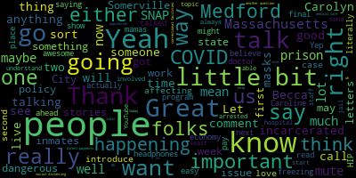
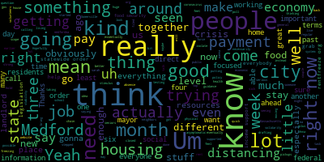

[Callahan]: everyone, thanks for joining us. Here we are on Solidarity Live. This is our second week. We're talking about how COVID-19 is affecting Medford and Somerville. So I have the great pleasure of having Medford City Councilor Zach Baers here with me. Zach, first I would love to have you just introduce yourself and maybe say a little bit about what is happening at the Medford City Council now.
[Bears]: Absolutely. Thanks for having me on, and thanks for putting these together, Hannah. It's a complicated question. There's just so much, so many moving parts, so much is moving so quickly. I think obviously a lot of the policy has focused on public health. Um, you know, that that's the utmost order right now. So we've been, you know, we, we closed schools before the statewide order. We had started implementing some of the business stuff before the statewide order. So I think, no, it was three weeks ago. It feels like three months ago. We, we had really, um, you know, it's an interesting time. We have a mayor who came in in January. So, um, you know, that's, That's a really big challenge for a new mayor to face something like the coronavirus And I think our mayor's done a good job really good job. Um and got out ahead a lot of a lot of the Statewide orders. I mean obviously if we started two weeks earlier we'd be in a very different position, but we weren't getting um that information From anyone, you know at the federal or the state level that guidance wasn't there when it needed to be there So in the absence of that, I think we've done um a really impressive job and I think to uh businesses and residents and volunteers and you know just local people have really stepped up um and supported each other and shown solidarity you know I think we're living solidarity right now and we're also living the crisis of our economic and social order right now and people might not be calling it the things that we some of us may call it um but I think it's a That's actually really important. So just in that general public health, stay at home, keep things closed. I think we got out a little earlier than some folks, and I think that's been good. And I think we've also just had really good communication. So in terms of emergency orders at the state or city level, if people have questions or they're interested, if you go to medfordma.org or medford-ma.gov, there's a really good page on coronavirus and also some really good stuff on food. and other issues as well. So that's a general summary. I could talk specifically about some policy, but I want to give you a chance to guide the conversation.
[Callahan]: Yeah. So thanks. One thing that I really want to do in every episode is, in case there are people, probably everybody's gotten the memo, but in case there are people who haven't gotten the memo, just how serious this is and why it's important to what they call social distancing, which I wish they were calling physical distancing. I pass people on the street, like I'm walking with my son or something, and we're like more than six feet away, and I'm like, hey, how are you? And some people are really friendly and some people are like, meh. So physical distancing, why is it really important and what are we facing?
[Bears]: Sure. So really at this moment, You know, we can call it social distancing, physical distancing, what it is in practice, and this is something, again, three months ago, a.k.a. three weeks ago, sharing out. Nobody knows what social distancing is. It's a new word for people, so that makes it really hard for some people, and also then translate that into other languages, and suddenly you have a huge kind of information breakdown, right? So what it really means is you need to stay at home if possible and avoid contact with other people like that's really what it is You want to know who you're in touch with? Um six feet has been the guidance I saw some science the other day that maybe even farther than six feet would be preferable. Um for a lot of uh of interactions physical distancing, um But it's important because we're breaking the chain of transmission of the of the virus right now. Um, so We've seen some effect of that. We don't have enough testing to know how well everything is working or how sick the people around us are. So that just adds to that need to just pause, isolate, self-isolate. And, you know, ideally, you know, I'm with my parents. Um, so we are in the same household, but we don't necessarily sit close to each other on the couch even. Um, so, uh, that kind of, uh, distancing I think is how we're gonna break the chain because we can't do, I think Dr. Fauci said it right. What we're doing right now is mitigation and that's not where we wanna be. We wanna be in the tracing and containment. It's so bad that we can't do that. So we all need to take actions in absence of the ability to actually track who's sick and who isn't. And this asymptomatic, especially asymptomatic among people like my age, like 25 to 20 to 40, that's another huge spreader as well. So if you're young, especially stay at home. Hopefully you're with roommates that you like and you can make it through. But you know, that's, it's really essential. I'm seeing someone right now. We live 10 minutes away from each other. We have not seen each other in three and a half weeks. So even making sacrifices like that is really important. You know, even if you think you're, you're safe. We don't have the information, we don't have the testing, so we really need to, yeah.
[Callahan]: By the way, I just got a comment that says if it's okay for you to mute your own computer, either put in the headphones or mute your own computer screen while you're speaking, that there's a little bit of... Sure.
[Bears]: I'm in a headphone right now, so I don't know if that's me.
[Callahan]: I have headphones in, so yeah. If the other, we also have two other folks who are on Skype. I don't know if it matters if they mute, if, you know, if they're in headphones or mute, that would be amazing. That might make a difference.
[Bears]: I don't know if Caroline is, so.
[Callahan]: Yeah. I bet I can probably mute her if she is not muted. Hmm. It's not as easy as in Zoom, but Caroline, if you're listening, if you could mute, that would be awesome. Thank you. Great. And so, you know, one thing I want to emphasize is that the real danger here is the idea that we may overwhelm the hospitals. So that's what, like, big picture-wise, that, I think, is what we're trying to avoid and why social distancing, why it's worth it to, like, literally almost crash our economy temporarily, because if we don't do this, you have so many people going to the hospitals that you literally just don't have enough ventilators and beds and doctors to treat them. And then there's no treatment. And if there's no treatment, then people simply, they just, a ton of people will die. So that's kind of the reasoning why it's important. And if you can, you know, we've talked about this a little bit last week, but if you have some notes of hope for people who may realize how bad it is and be at home feeling very down about things, that this maybe won't be forever, like what is your sense of us pulling out of this?
[Bears]: Yeah, so I mean my personal... thing that I found I was doing my back of the napkin we're gonna have this many cases on this day and you know based on doubling every day and for the first couple weeks we were ahead of that now we're behind that that's just my calculation I'm not a scientist that's just what I'm doing to make myself feel a little more comfortable I mean I If they hold, we need multiple polls, we need a polling average, right? But, you know, that Boston Globe poll that 90 plus, 94 plus percent of people think this is incredibly serious, they're taking it seriously in Massachusetts was really good. And I think, too, just the, you know, we haven't seen here what we've seen in New York over the past couple weeks as well. So I think it shows that Getting out a little bit ahead of everything has helped us here. We're certainly not out of the woods. We can't stop We're probably you know, if we do this for another month, maybe then we'll be able to assess but I Mean the other good thing is that you know The stimulus package wasn't what we wanted it to be but it was a lot better than 2008 and as things get worse I studied economics when I went to school and I actually worked as an economist for the Department of Labor and You know, it doesn't mean I know what's going to happen. This is unprecedented. But, you know, the next step will need to be another stimulus. It will need to be more focused on regular people. I think there's going to eventually come to this conclusion that Um, you know, we're gonna have to do direct income support or do a payment kind of hold and for me I mean we've never seen something like this before we're like having the great depression in world war ii in three months, which is a very It means it's nuts for the economy. Um, but you know if we could eventually get to a place where we say wherever we were on march 1st that's where you're gonna be on july 1st and just say That's actually an even better system than trying to prop everything up through income support. It's just saying, we're just going to live in our houses for four months. If you have a landlord, the landlord's not going to pay out stuff for four months. You're not going to pay them for four months. It really starts to think about, instead of crashing the economy, freezing the economy. I think either way, because of the depth and scope and speed of the crisis, there has been more of a focus on working people than in the past. Obviously not everyone, obviously not our undocumented neighbors. So for people who are left out, there are funds that I really think you should look into to support people.
[Callahan]: Yeah. I'm really interested in hearing a little bit more from you about the two sort of avenues that you talked about. One is direct payments and the other is freezing the economy, right? So I know In Denmark, they're paying every worker 75% of their income, I believe, for the time being. Just the government, that's the way that they're handling it. But in Boston, there is a new movement for Massachusetts, I believe it's called Housing Guarantee, that's talking about in addition to a moratorium on mortgage payments, having some sort of a cancellation of rent for people who are unable to pay. Can you talk a little bit about either of those? Talk either about the freezing economy or about the direct payments side?
[Bears]: Yeah, I mean, I think we're getting a little bit more there on the direct payments just in terms of we're all getting $1,200. It's not enough. So there's a system in place, and we are receiving something. So there's some form of direct payment. And what Senator Sanders was able to do around the 1099 tipped and gig employees and getting them into unemployment, and then also having that extra $600 a week on top of standard benefits, as well as the extension from six months to nine months of how long you can be on. So that's kind of where we are now. Those are some of the new income supports that we've created. They're not going to be sufficient. So I think we're going to have to come back and say, what's a regular payment schedule and just instead of just saying you get $1,200 one time. So really thinking about at least for some period of time essentially a basic income, right. for everybody. And then I would love to see jobs programs at the federal level if we can get to a point where the economy isn't strong, but we are healthy enough for us to do something like that to try to finally rebuild a lot of our broken country and pay people good wages and make sure they have union jobs to do that. I think the payment stuff is something that's a little more in our scope of control at the state level, especially around housing. So I know that there's kind of many different ideas out there right now.
[Callahan]: By the payment stuff, you don't mean direct payments from the government, you mean... Sorry, I mean... Freezing.
[Bears]: Yes, the freezing of the economy. You know, there is something I think called rentfreeze.org. I'm going to type that into my browser really quick just to make sure that I'm not lying to you, and I'm not. Rentfreeze.org is a website. Representative State Rep Mike Connolly, Somerville, Cambridge, has been working a lot on housing-related legislation. Just last night, the Medford City Council supported HD 4935, which is the eviction and foreclosure moratorium bill that he's filed. And now he's also drafting legislation. He's actually drafting it publicly at rentfreeze.org. So he hasn't filed it yet. He's trying to get input and suggestions and thoughts before he files it. So if you have them, go put those in. And I think that's because we can't gather right now. We can't come together at the state house and say, this is what we want. that would do a rent freeze and kind of There's a lot of things we talk about. I think the idea that we're talking about is essentially what some people call cancellation, which is just More for both mortgages and for rent We're taking these few months off. It's not going to accrue interest You don't have to pay a balloon payment at the end of a pandemic to your landlord, right? um, so That's really what we're thinking, but it's not you know tenants don't pay and everyone else is in that landlords and property owners are kind of in trouble from that. We really need everybody. That's what I've been trying to say is this is all hands on deck and we're trying to help everyone. And that seems to be the intent of what's going on with definitely the progressive housing legislation here in Massachusetts.
[Callahan]: Yeah, absolutely. Anything else going on at the city level?
[Bears]: Yeah, I mean, so for housing, we're just kind of trying to pull everything together. I think something that communities to look into is if you have Community Preservation Act, CPA, you may have some funding that's for affordable housing, and that is allowed to be used for rental assistance, or at least we think it is. So we're looking into that right now. We're not as well resourced as some of our neighbors in Somerville. So, you know, they have a whole housing stability office. We're at least trying to get a housing stability hotline up for Medford residents that has the state and federal resources and then hopefully city resources. And then our food security task force has been doing a fantastic job. They have existed You know, we have a very serious food security problem in Medford We're one of the top cities in the state in terms of people who don't have access to food. Um, so We have been over the past several years a group of residents sarah mcgiburn and others have really been doing a great job along with the You know people at city hall our city staff, um, and they have stepped up unbelievably, uh during this crisis we have I think We have grab and go for seniors and children and families now where we've actually expanded that so much that I think, you know, it's not just necessarily focused on, we might not have enough for everybody who comes so there's a lot of locations around the city for grab and go lunch pickups and I think breakfast pickups as well. From this food security task force and our interfaith clergy who have been putting together micro pantries around the city so basically almost small boxes and different places that are just come, come and grab food that Sarah bring food if you can.
[Callahan]: Yeah, we've seen that on the mamas list, the Mutual Aid Medford and Centerville, that people are helping with that. And they also have a lot of good advice about how to, wearing gloves, washing before you go out. And that if you're leaving something in the pantry, that you want to do that safely. So that even if you're completely asymptomatic, that you're not leaving something for someone that could potentially infect them. Right. So I know that there are a lot of good people who are helping to fill those as well.
[Bears]: Yeah. One other really quick thing, Anna, if I can, is just that we've had volunteers also calling our seniors. So that's been just checking in, seeing if they need anything. That's been a great thing that we've been able to do. We have some ward captains that are kind of sometimes linked into the mamas, and there's just a lot of interconnected networks of people helping each other. So that's been, and the city's been kind of lifting that up as much as possible.
[Callahan]: Yeah. Yep. Great. So we actually do have a food insecurity person who's just about to come on the call. And I wanted to ask if you have any final words for people for this week before we go to the next guest.
[Bears]: Yeah, just stay strong. If you need help, reach out. People are here everywhere around you. Medford, again, if you're in Medford, there's a lot of resources on our city website, including all the different kinds of help, and especially if you're in crisis or you're struggling and you just need someone to speak to and kind of work through that. There's some connections to some resources on that as well.
[Callahan]: Great. Do you want to say one more time the website that people can go to for Medford?
[Bears]: Yeah. It's medfordma.org or medford-ma.gov. They bring you to the same place.
[Callahan]: Fantastic. Thank you so much for being on. It's great to hear about the great work that you guys are doing there and chat a little bit also about state and federal policy. Thank you.
[Bears]: Thanks, Anna.
[Callahan]: Yeah. We're going to go ahead and switch to Becca Miller. Becca, I've got you on screen now. I'm going to switch out the name so that you don't look like you're Zack Bares. There we go. Awesome. So first, I would love for you to introduce yourself before I kind of read the story that led me to invite you on here.
[SPEAKER_02]: Sure. I'm Becca Miller. I live in Somerville, Mass. For my day job, I work as the campaign manager at the Massachusetts Food System Collaborative for the Funding for Healthy Incentives campaign, long name, which is a program under SNAP in Massachusetts. And I also organize with Boston BSA, and I'm on the steering committee of Nationwide Ecosocialism Working Group. Fantastic.
[Callahan]: Thanks for all the great work that you are doing. So I would like to just go ahead and read. Someone sent an email to the show, and they wanted me to read it. So this is someone who says, I am a 58-year-old disabled Medford resident. My doctor advised me to shelter in place due to my congenital lung disease. When attempting to set up an online grocery delivery, I discovered that Massachusetts does not allow SNAP EBT recipients this necessary service. Why is this? This presents a very dangerous choice to high-risk individuals. Go hungry or expose oneself to a potentially fatal infection. Please explain.
[SPEAKER_02]: So first of all, solidarity. I'm sorry. That's extremely frustrating. And I'm, again, sorry that that's happening. This is not really like a state issue. It's more of a federal level issue USDA which manages snap across the country Doesn't allow online sales for snap right now except in five states, which is part of a pilot program which started back in 2019 and those states are mainly working with two retailers for that online purchasing pilot program, which are Amazon and Walmart and So it's not really like a state issue. It's more of a federal issue on the back end. It's not like super exciting. It's mostly just like the tech isn't there to support online purchasing. And the Massachusetts Department of Transitional Assistance, which manages SNAP in Massachusetts, understands that, especially right now, folks want this and are seeing other folks being able to purchase groceries through Peapod or prime or through a variety of local distributors, right? And so they have been asked by the Massachusetts legislature to ask USDA for a waiver that would allow this to happen. But again, because it's a tech issue, it's something that would probably take a couple months to get set up and running. And there are also some concerns among advocates in the food security world that because Amazon and Walmart are the two retailers in this pilot program, that they would be the only ones benefiting from this expansion. And we know that they're going to survive this crisis, but we don't know that other farmers that are SNAP-authorized or other smaller retail or grocery chains that serve areas that are commonly known as food deserts or bodegas, they're not necessarily going to be automatically included in this, which is just another complicating factor. This is kind of a long-winded answer, and I'm sorry, but there are a couple ways to get around this. You can add an authorized person to your EBT account. You can do that online through the DTA Connect portal. You can also ask a trusted friend or neighbor to go shopping for you. You give them a list through Mamas, as Anna lifted up earlier. Retailers are really like not allowed to ask about the identity on your EBT card that's protected by federal law. So don't feel uncomfortable about that, but just definitely make sure that it's someone that you trust if you're gonna ask someone to do that for you.
[Callahan]: Yeah, and also you had mentioned when I first asked you about this that the HIP program, you actually can order fresh produce through the HIP program for delivery. Can you talk a little bit about that?
[SPEAKER_02]: Yeah, for sure. So HIP is a special program. It's the only statewide program of its kind in the country. Essentially, if you receive SNAP in Massachusetts, you get an extra $40 to $80 per month to spend on fruits and veggies with participating farmers. Because of the crisis, a couple of farmers have reworked their business models to do online delivery. Essentially, folks can put in orders online and they pay in person, like farmers are literally going door-to-door across the state to like make sure that folks can like swipe their cards in person, still make that happen. So there are a couple of farmers that are doing this in Western Mass. There's the Sunderland Co-op, which essentially aggregates a couple different farmers. There's one called Mass Food Delivery. There's like a bunch of different ones that I can like call out, but essentially it's easiest if you call Project Bread to find a hip retailer near you. Just because I don't know where this question came from. I don't want to like make sure that we're missing anyone. But yeah, a lot of farmers have reworked their business models to make sure that like folks are still accessing fresh food during this crisis.
[Callahan]: Yeah, that's an amazing program that Massachusetts has. And can you either, like, do you happen to know the phone number for Project Bread, or is there a website for them? Like, where can people find this information?
[SPEAKER_02]: Yeah, I can tell you both. So it's Project Bread's food source hotline, which has language capacity for about 160 different languages. And that number is 1-800-645-8333. You can also just look at Project Bread's website at projectbread.org slash get dash help. And they have a bunch of different resources there. Great.
[Callahan]: That's awesome. I'm slightly curious just about the tech issue that you talk about. So when you're saying that we can't get it here in Massachusetts, I understand the issue with Amazon and Walmart being the two options in the five states that do have it, right? That's not perfect, to say the least. But what's the tech issue between us and getting at least those two who are piloting it in other states to be able to deliver to people in Massachusetts?
[SPEAKER_02]: Yeah, so I am not an expert in this, so forgive me. But it has to do with the EBT system's third-party processor. So essentially they just need to code the ability for Snap transactions to happen online because essentially USDA Snap regulations only get updated when there's like new farm bills, which only happen every 45 years and there's usually tensions. Yeah, so it's mostly just like the back end, like there needs to be a lot of coding and like security that needs to happen on that end. And I have been told it will take a while.
[Callahan]: Okay, at least we've got HIP here, that's great. Do you have any final thoughts for folks who either may have some, either are on SNAP or maybe aren't on SNAP? For example, who's eligible for SNAP? And would people now who have lost their jobs, maybe they would be eligible for SNAP and they don't know? Who can apply?
[SPEAKER_02]: Yeah, so there's a couple of different requirements to apply for SNAP. They have to do with income, citizenship status and a couple of verification documents. If you've recently lost your job or had a decrease in hours, definitely don't wait to apply for unemployment insurance. Do that first and then apply for SNAP. There's been a lot of rules changes with SNAP just to make things easier and more expedited because of the increase in applications the state has seen because of the crisis. So there's been a lot of ease and restrictions. So if you have lost your job, definitely apply for unemployment assurance and then apply for SNAP. You can do that online at DTAConnect.org. Or you can do it with a partner agency, like I said, with Project Bread's food source hotline. They also take SNAP applications over the phone. So if you don't have internet access, you can do it that way. And they also have language capacity, as I mentioned. The state's max SNAP benefit isn't too much. So there's definitely advocacy going around that in the federal stimulus budgets, but right now, is definitely an important resource for folks to get if they have been affected by the crisis.
[Callahan]: Absolutely. Great. Well, thank you so much, Becca. It's been great to have you on. And again, for the work that you do, always. And I think we are about to start a conversation about incarcerated folks in Massachusetts and how they are dealing with SNAP. So thank you, Becca. We're going to say ciao to you. I'm going to invite on. Carolyn Bayes. Great, Carolyn, you are live. I fear that I have a frozen version of you. Hang on. Yeah, Carolyn, we might have to reopen our phone call. You might have to dial in again. Yep. Let me see if I can get Carolyn on the horn here. Meanwhile, I will say you can always send in your stories. You can send in your questions. You can comment on YouTube, and I can see all those comments, so we can bring those in. There is Becca again. Hi, how are you? I'm going to try and get Carolyn on here. Let me call her back. Aha, she is calling in. Pardon me, I have a little bit of an issue with Skype. Give me one second. Trying to get Caroline on here. Let me, I don't have your video, but I do have your audio. Ah, I've got you. Thank you. Great. So first, we're gonna talk about how COVID-19 is affecting folks in jails. And I would love it if you would go ahead and just introduce yourself and how you are sort of related to this topic.
[n_9e096pvxo_SPEAKER_02]: Sure. My name is Caroline Bays. I am the president of the Board of Progressive Massachusetts, and I've been working on criminal justice issues for a while now. And I, oh, by the way, I'm also a town Councilor in Watertown, so I could relate to what Zach was saying. But I have been visiting, as a result of my activism, I've been visiting a young man who's been in solitary confinement for three years. because he doesn't have any family nearby and has nobody else to visit him. So I've been learning what it's like really almost as a family member for somebody who's inside prison and especially inside solitary confinement.
[Callahan]: So. Yep. Before we talk a little bit more generally about what's happening, well, you tell me, do you want to talk generally about what's happening in Massachusetts prisons? Or do you want to go, should we just go straight at what's happening related to COVID-19? I think let's start with COVID-19 and why it's so dangerous for them at this moment. And then we can broaden it up a little bit after this.
[n_9e096pvxo_SPEAKER_02]: Yeah. So yeah, right now, I've actually been talking to him. We've been emailing daily. Right now, basically paranoia and fear is running rampant through his tier. They're basically helpless. They cannot leave their cells without touching, you know, people, things. They have to be, I mean, to the point where they actually, every time they leave their cell, even just for a shower, they're strip searched. So they have no way of protecting their own bodies. and from the correctional officers. In addition, the correctional officers are from what he's saying, not taking it as seriously as they would like them to. Just as of a few days ago, they were finally given masks, you know, face masks, the correctional officers, but none of them are wearing it. They're putting them, you know, I'm thinking of all these doctors who were killing for masks and they're just putting them around their necks and joking about it and joking that they're gonna breathe on, that they'll joke like they'll cough. act like they're sick and say that they're going to breathe on the prisoners. And it's just very scary for the prisoners. They're buying as much soap as they can. They don't have any hand sanitizer.
[Callahan]: Do you mean that the prisoners themselves are spending their own money to buy soap?
[n_9e096pvxo_SPEAKER_02]: Oh, yes. Oh, that's true of everything. That's the broader issue. They have to spend their own money to buy toothpaste, toothbrushes, If they want decent food, they have to spend their own money.
[Callahan]: So before you go on, I do want to just mention we have someone who's commented on YouTube saying they're hoping to hear about what correctional facilities are doing to prevent the spread of COVID-19. And so it sounds like one thing that they're doing is they seem to have obtained masks, which it's so incredibly important for our, like there's a shortage of masks, and it's so important for our hospital staff and doctors to be able to have the masks that they need. And of course, it's important for correctional facilities to have masks as well, but not if they're just wearing them around their neck and using it to, you know, taunt the inmates.
[n_9e096pvxo_SPEAKER_02]: Yes. And they also said they were cleaning, like they were cleaning the showers, they were doing things like that. But as far as he could tell, the showers didn't look any cleaner. They didn't have, he actually saw the cleaning supplies that they said there was gonna be special cleaning supplies, but he's seen those cleaning supplies a million times. It's the same cleaning supplies. So they haven't, they're saying that they're doing things. The one thing that they have done that is the best thing they have done is, Unfortunately, he's in solitary confinement. He does get one visit a week. Understandably, everybody understands they've had to cancel all visitors. However, they are in lieu of that giving them two extra phone calls a day, and they're giving them a free phone call. And just that little step I wish that the CEOs, I wish that actually the people who run the prisons could understand that little step goes a long way. It is so appreciated by Andrew, the young man I visit, and all of the other prisoners who have to endure being separated from their families.
[Callahan]: Yeah. So I'm going to jump in. I can't resist jumping in here because I did spend two nights in jail in 2000 when I was illegally arrested for protesting. There were about 71 of us. We were illegally strip searched. The women only were strip searched twice during our time there, and there was a giant lawsuit afterwards and all that. But I will say that this was in Los Angeles, and I will say that we were we were arrested and literally not allowed to wash in any way. And the police who had arrested us had us leaning up against, like, pushing us against a chain link fence that was, like, covered in grease and oil because it was right directly underneath a freeway. And so our hands and our bodies were just, they had all this black grease all over them. And we were not, there was no, ability for us to wash anything at all for like, you know, 30 hours or more. So, And the whole taunting thing, people may not realize how much psychological games are played to inmates by correctional staff. So the idea that correctional staff are joking about purposefully getting inmates sick with COVID-19, that is, You know, when this is real psychological. I mean, it's terrible. That should not be legal for them to do that. And then I want to, for a second, before we go on, to talk a little bit about how dangerous it is to be in these close quarters with people. I mean, we're talking about social distancing, and people who are incarcerated do not have that ability. So can you talk a little bit just about how dangerous it is and if there have been any outbreaks inside of any correctional facilities?
[n_9e096pvxo_SPEAKER_02]: There has been an outbreak in a correctional facility. Quite a number of people have gotten sick. I'm not up to date on today on what the numbers are, but it was 17 the last I'd looked. I did hear from Chris Fallon, who said that they have lots of protocol and that he was going to keep people from being sick, but the protocol obviously is not being followed. and people are getting sick. The main problem is, and as you must have experienced and felt yourself, is just a pure helplessness. We can control where our bodies go. We can control what is gonna happen to us, but they are totally at the whim of other human beings. They have zero control over this. So the psychological sort of fear even without another human being actively trying to terrorize you, the psychological fear is there already and the helplessness and the not being able to, you know, protect yourself is just, you know, it's heartbreaking to listen, well, I'm reading right now what Andrew has to say about the experience of being inside there right now.
[Callahan]: We have another question here. Are there ways for people to get involved and support the incarcerated population during this time of crisis? Canteen money for soap, masks, letters. I am sympathetic to those who are in prisons.
[n_9e096pvxo_SPEAKER_02]: So letters are always appreciated. There's several different, you can go online and find, you know, write a prisoner. There's a couple of websites that can match you up with prisoners. I can't tell you how much letters are appreciated. Once you've established a relationship, it's a little difficult to get money to somebody, but once you've established a relationship, they can describe how you need to, how you can get some money for people. There's no donation for getting things. It's actually quite difficult to get anything to a friend or relative. And you can't buy it for them. They have to buy it themselves. And it's only prison-approved things from the canteen that are allowed to go into their cells. You can't really buy them anything.
[Callahan]: And before we go on to the next questions, we do have another question. You're saying that letters and emails are really helpful. Is there a particular easy way? I know that a lot of people who are involved in Mamas Mutually Medford and Somerville are, people want to help. People want to be able to do something. What's an easy way for people to get involved that way?
[n_9e096pvxo_SPEAKER_02]: The best way to do that, I think, writeaprisoner.com, I think is the name of it. Look that up. And there's lots of prisoners who really are begging for people to write them because they don't have that much contact with the outside. So I would do that. That's probably the best way. There are also a whole bunch of different groups who are working on different issues. I'm a member of both Massachusetts Against Solitary Confinement. I'm also a member of a group called Concerned Elders. We actually go in and visit people in prisons. If you want to give people my contact information, especially if they're interested in visiting people, that is one of the things that are harder for people to do. really makes a big difference in their lives.
[Callahan]: And I assume we can't do that right now.
[n_9e096pvxo_SPEAKER_02]: What?
[Callahan]: Visiting, yeah, there's no visiting, right.
[n_9e096pvxo_SPEAKER_02]: No, no visiting right now. However, if the writing the letters is allowed, so that can be done. But if anyone's interested in getting involved, I'm happy to point them in the right direction, you know, for whatever thing they might want to do. There's also different groups who go in and educate prisoners so they can go in and actually they could become part of a group that might teach people how to read or teach people how to write. you know, there's also groups like that. So I, there's a, there's a long list of groups and I'm like, the names are escaping me right now, but, but I would be more than happy to, to, you know, forward all that information to anyone who's interested.
[Callahan]: Wonderful. There is another question, which is, do you know what sort of medical care is available in case someone in prison does get the virus?
[n_9e096pvxo_SPEAKER_02]: There is medical care available. However, from what I've seen, and I don't know if they've improved it at all, it's been very, very lax. They do have nurses, but they have way too few doctors and nurses per prisoner to really deal with. If there's a huge outbreak, there's going to be a big problem because they just don't have the bandwidth. There's too few doctors and nurses employed by the system to deal with a huge outbreak in the Massachusetts state prisons.
[Callahan]: Right. So, you know, I've heard, I know that a couple of our city councilors here in Somerville, Ben, you and Kevin and JT Scott, and as well as other people have been talking about releasing certain portions of the prison population. Certainly the the ones who are oh, what's I'm forgetting the term. I I sometimes call it debtors prison, right? It's people who their pretrial detention. Is that right? So they they haven't been convicted of anything and they just can't pay bail. And so they're held in jail.
[n_9e096pvxo_SPEAKER_02]: Is that yes So so despite the fact that they're supposed to actually not not not force people to to pay a bail that's unaffordable, they are still requiring bails that are unaffordable to people. So there's a lot of people in jail, the vast majority, I think it's the majority of the prisoners, jails, we've been talking about prisons, now there's jails, have not actually been convicted of a crime.
[Callahan]: It is so insane. It's really mind-blowing to me that this is true in America today.
[n_9e096pvxo_SPEAKER_02]: Yeah, so Rachel Rollins, has been working on that. She kind of took the lead. I know that Peter Kattushian and D.A. Ryan are looking at who they can release, but it's taking them a while. And also, I think Andrea Harrington is another D.A. out in the western part of the state who's also looking into trying to get people released who could possibly, you know, be released. And this includes not just the people who are held on bail and are pre-sentencing, there's There's high-risk people with illnesses who should definitely come home. There are geriatric prisoners who should come home. There are parole-eligible people should be coming home. And anyone who's really close to being released should just be released.
[Callahan]: Is there some way that we can pressure people? Is there a way that folks listening here can help with that?
[n_9e096pvxo_SPEAKER_02]: Yes, well, first of all, the DAs are, you know, they're elected, so certainly, as a constituent, please contact every DA, especially the ones who are not acting on this, please contact them. And also, contact your state reps and your senators, because Lindsay Sabadoza has filed a bill, HD, you can write this down, HD 4963, to decarcerate prisoners. And that is something that people can do. Try to get your legislators to support that bill.
[Callahan]: Great. Do you want to talk a little bit about, we've talked a lot about COVID-19 and how it's affecting people. Can you talk to us a little bit about what you were working on before COVID-19 and about solitary confinement?
[n_9e096pvxo_SPEAKER_02]: Sure, yes. I'm part of a group, like I said before, Massachusetts Against Solitary Confinement, which people could also join. We'd love to have more members trying to bring attention to the fact that Massachusetts has one of the largest solitary confinement populations in terms of the proportion of prisoners we have, inmates we have in Massachusetts. The last time for the last year where they were really taking a sample, out of 9,000 prisoners, approximately 3,000, a little bit less than 3,000 had been put in solitary confinement in Massachusetts. And they keep them in there for up to 10 years.
[Callahan]: How is that legal?
[n_9e096pvxo_SPEAKER_02]: It's legal in Massachusetts, and it's still legal even after the Criminal Justice Act was passed. So I have a friend who's visiting someone who was sentenced for 10 years. I'm visiting someone who was sentenced to four years. And I mean, the young man I'm visiting was sentenced to 20 years in prison. He was sentenced to four years in solitary confinement in an incident where nobody was hurt. so where nobody was even injured. So it was an altercation with a correctional officer, but it was a minor altercation.
[Callahan]: And by the way, I think you once mentioned to me the limit. Isn't there a limit under the sort of world human rights? Who has a limit that's... Oh, 15 days.
[n_9e096pvxo_SPEAKER_02]: Yeah, according to the... yeah, the UN, 15 days is torture. And 15 days is nothing. They don't even, you know, everybody gets 15 days. And most people spend two, three months. And then lots of people, and for the place where the young man I visit, it's a DDU, It's specifically, it's almost a separate prison that's specifically just for long-term solitary confinement. Everybody has over a year.
[Callahan]: That is totally insane.
[n_9e096pvxo_SPEAKER_02]: Yes.
[Callahan]: That's horrible. Horrifying.
[n_9e096pvxo_SPEAKER_02]: Because they've all spent at least six months waiting in solitary confinement for a sentence, and then they're sentenced to at least six months. Usually they're sentenced to about a year or two years.
[Callahan]: So, yeah. Wow. Well, let's end on a slightly better note than that one. Do you have any better notes than that one in terms of the incarcerated population? Like, what do you... Is there anything on the horizon? Are there any bills that you think are happening right now, maybe at the state level, that have a good chance of passing? Or, you know, Rachel Rollins, you know, she seems pretty good. And maybe through our elected DAs, we're going to be having some positive movement.
[n_9e096pvxo_SPEAKER_02]: I'm hoping through DAs like Rachel Rollins, like Andrea Harrington, there is gonna be some movement and they are gonna stop incarcerating so much, so many people in our population are incarcerated who do not need to be incarcerated. And I actually did court watch and I'm starting to see the change and I'm starting to see the decarceration of our population, which is the hopeful, thing that's happening on our, that's the hopeful, you know, if they're not in prison in the first place, then we don't have to worry about the conditions in prison.
[Callahan]: That's exactly right. That is right. Yeah. Thank you so much for coming on today and for talking about this incredibly important, I think, too often overlooked topic. And also for all the work that you do. Oh, thank you. It's really important. I'm going to actually go on. I'm going to see if I can get some mamas folks to some momma's folks to start writing letters. We have one final comment. As the mother of a previously incarcerated, I agree with Caroline when she says the medical care is lax. Inmates are often not taken seriously and there are longer than average wait times for care. Yeah. So medical care in prisons, important topic, especially now. But yeah, we're going to see if we can get some folks to write some letters. And thank you so much. Great to talk to you.
[n_9e096pvxo_SPEAKER_02]: Thank you.
[Callahan]: So just to close this out, you can always, as you can see, we take comments over YouTube. We really want to elevate people's stories. So if you have a story, if anything has been happening to you because of COVID-19, if you've been affected by either the health crisis that we have or if you have been affected economically. We know a lot of people in the district have. We know there are a lot of students in Medford and Somerville who had to leave school and either are stuck having to pay rent where they're not living or are stuck not having a place to live. and then having to find places to live. So if you have any stories, please send them in. We can talk about them anonymously. We can have you on the show. I really believe that good policy is based on uh, hearing directly from what's happening to people. Um, and so, uh, I also think that we help people understand why policy is necessary by really elevating these stories, um, so that we all understand, uh, how policy affects our lives. So thank you so much. Um, great to have everybody here. And that is the end of today's show. We will be back next week. Thank you.
|
total time: 18.46 minutes total words: 2777  |
total time: 13.63 minutes total words: 2394  |
||
{kind=link}
{kind=link}